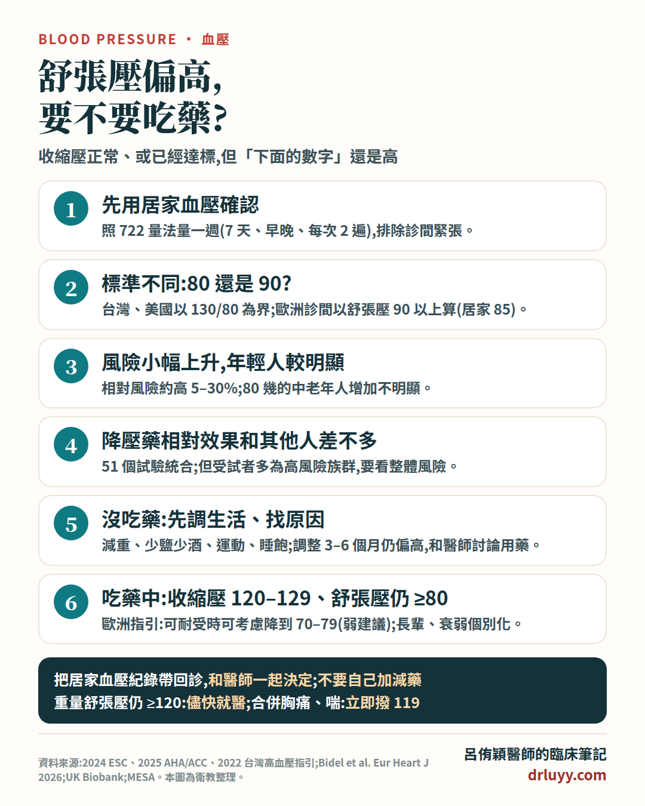

舒張壓是什麼?「下面的血壓」高,常見兩種情況
血壓有兩個數字:上面是心臟收縮、把血打出去時的收縮壓;下面是兩次心跳之間的舒張壓。門診常遇到兩種「下面的數字比較高」:
- 沒吃藥,收縮壓正常、只有舒張壓高:醫學上叫「單純舒張期高血壓」,最常見於年輕人,尤其是體重過重或有代謝問題的人。
- 已經在吃降血壓藥,收縮壓達標了,舒張壓還是偏高。
舒張壓會隨年紀上升到大約五、六十歲,之後持平甚至下降;收縮壓則一路往上。所以年輕人比較常是「下面高」,長輩比較常是「上面高」。(舒張壓太低的情況,請看舒張壓偏低。)
多少算高?各國標準不一樣
- 台灣(2022 年台灣心臟學會與高血壓學會指引)、美國(2025 年 AHA/ACC):以 130/80 為界,治療目標是收縮壓和舒張壓都低於 130/80。台灣指引特別建議以居家血壓「722 量法」為準(連續 7 天、早晚各一次、每次量 2 遍)。
- 歐洲(2024 年 ESC)、英國:診間血壓診斷高血壓用 140/90,單純舒張期高血壓定義為收縮壓低於 140、舒張壓 90 以上;居家或白天動態血壓的門檻較低,以 135/85 判讀。
同樣是「下面高」,用不同標準,意義不太一樣。英國約 15 萬人的研究中,收縮壓正常的人裡,用美國定義(收縮壓 <130、舒張壓 ≥80)約四分之一符合,心血管風險沒有明顯增加;用歐洲定義(收縮壓 <140、舒張壓 ≥90)只有 6% 符合,風險小幅增加(約 15%)。
單純舒張壓高,危險嗎?
- 2024 年歐洲指引整理:單純舒張期高血壓的人,心血管相對風險大約只高 5–30%,而且這些人多半年輕,10 年的絕對風險通常不高。
- 美國 MESA 研究與另外 7 個世代研究的統合分析:用美國定義,和心血管風險的關聯不一致,就算有增加,幅度也小(約 4–9%);MESA 本身也沒看到冠狀動脈鈣化增加,但之後比較容易變成收縮壓也高。作者提醒,這個結論不一定適用於 40 歲以下的人。
- 韓國約 640 萬位 20–39 歲年輕人追蹤 13 年:第一期單純舒張期高血壓的人,心血管事件風險比血壓正常的人高約 3 成(風險比 1.32),和單純收縮壓高差不多。
簡單說:風險確實存在,但幅度不大;年輕、舒張壓 90 以上、合併其他危險因子的人比較值得積極處理。
降血壓藥對「只有舒張壓高」的人有用嗎?
2026 年《歐洲心臟期刊》整合 51 個隨機試驗、約 36 萬人的個別病人資料:其中約 1 萬 6 千人收縮壓低於 130、舒張壓 80 以上。降血壓藥讓收縮壓每降 5,主要心血管事件風險降低的比例,在這群人(風險比 0.91,95% 信賴區間 0.82–1.01)和其他人(0.90)差不多,沒有看到效果比較差。
要注意:這些試驗的受試者平均約 60 歲、多數本來就有心血管疾病或在吃藥,屬於風險較高的族群。「相對效果一樣」不代表年輕、低風險的人吃藥能得到一樣多的好處——風險本來就低的人,吃藥能減少的事件也比較少。所以要不要吃藥,還是要看整體風險。
情況一:沒吃藥,收縮壓正常、只有舒張壓高
- 先確認是真的:診間一次量到不算數。用居家血壓(722 量法)或 24 小時血壓確認;長輩如果是這種型態,更要確認量得準。
- 找原因:年輕人要想到體重、喝酒、睡眠呼吸中止;某些藥物(例如含雌激素的口服避孕藥、感冒藥)、保健品、能量飲料或其他刺激性物質也可能讓血壓上升。舒張壓特別高、或合併血鉀偏低的人,醫師可能會安排檢查原發性醛固酮症等次發性原因。
- 生活習慣是第一步:減重、少鹽、少喝酒、規律運動、睡飽,對舒張壓常常很有效。
- 要不要吃藥看整體:舒張壓持續 90 以上,或合併糖尿病、慢性腎臟病、心血管疾病、器官受損等,和醫師討論用藥是合理的。舒張壓 80–89、沒有其他危險因子,通常先調整生活並追蹤;但各指引做法不同——依美國 2025 指引,即使風險低,生活調整 3–6 個月後舒張壓仍在 80 以上,也應和醫師討論開始用藥;2024 年歐洲指引則坦言,對收縮壓本來就在 120–129 的人,是否要為了舒張壓開始吃藥並不明確。
- 持續追蹤:單純舒張壓高的人,之後比較容易出現收縮壓也升高,要定期量。
情況二:已經在吃藥,收縮壓達標、舒張壓還是高
- 2024 年歐洲指引:收縮壓已經控制在 120–129、舒張壓仍 80 以上,可以考慮加強治療,把舒張壓降到 70–79。這是證據等級較弱的建議(主要是專家共識),因為支持收縮壓目標的證據很強,支持特定舒張壓目標的證據較少;而且大部分人收縮壓降到 120–129 時,舒張壓也會跟著到 70 幾。
- 美國 2025、台灣 2022 指引:目標都是低於 130/80,收縮壓和舒張壓都要達到。
- 實際步驟:先看居家血壓是不是真的偏高、有沒有按時吃藥、有沒有喝酒或體重增加;再和醫師討論調整劑量或藥物組合。
- 長輩要個別化:85 歲以上、中重度衰弱、或經評估治療前就有症狀性姿勢性低血壓的人,指引建議依耐受性和整體健康個別化,可以考慮較寬鬆的目標;是否為了舒張壓加藥,由醫師評估。
給病人的提醒
用居家血壓說話
照 722 量法量一週,把收縮壓、舒張壓都記下來,回診帶給醫師。
非常高要儘快就醫
休息後重量舒張壓仍 120 以上,請儘快聯絡醫療人員,不要等一週紀錄;合併胸痛、喘、意識改變等症狀,立即撥 119。
先從生活習慣下手
減重、少鹽、少酒、運動、睡飽,對舒張壓常常很有效。
不要自己加減藥
要不要加藥、加哪一種,請和醫師一起決定。
留言與回饋
歡迎在下方留下你的想法或問題，留言經審核後才會公開顯示。提醒：本區不提供個別診療，個人病情請就醫或掛號諮詢。